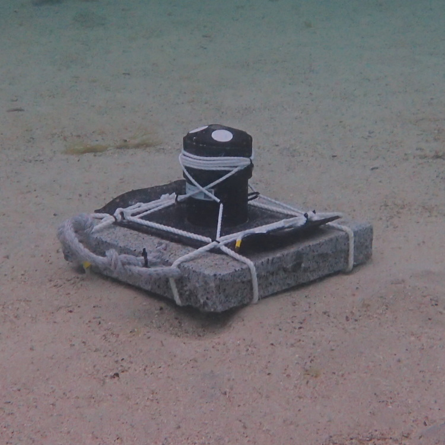
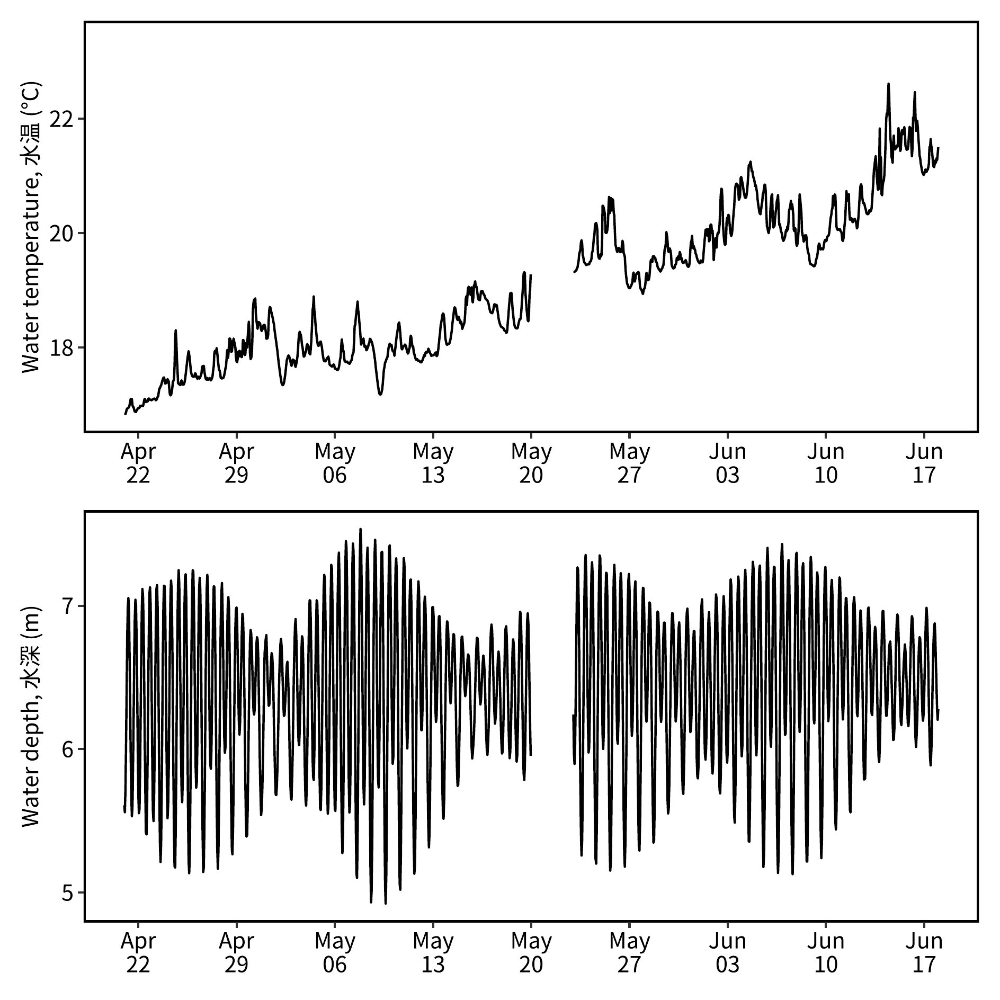
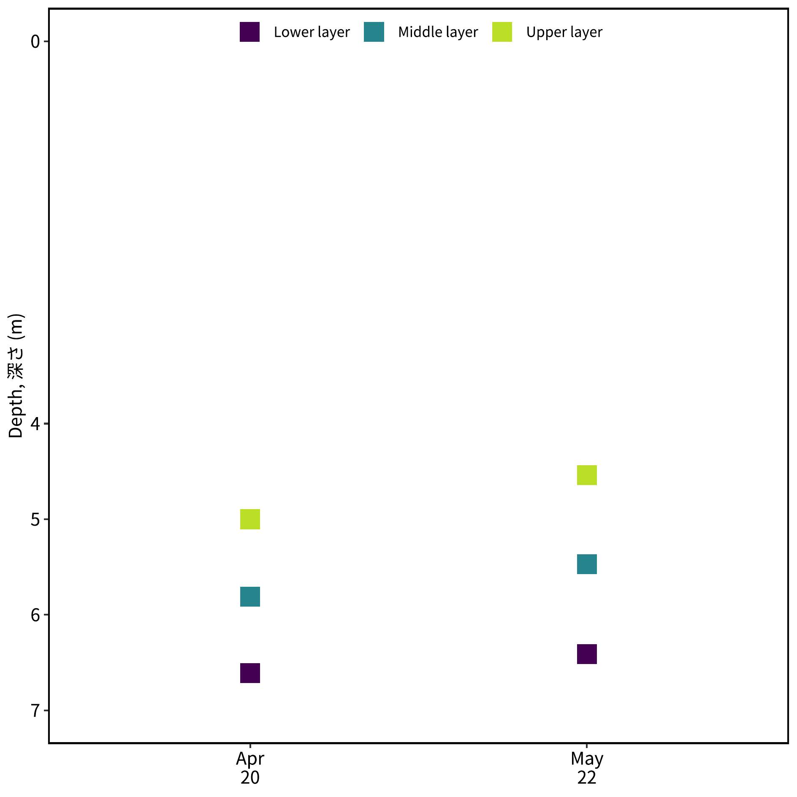
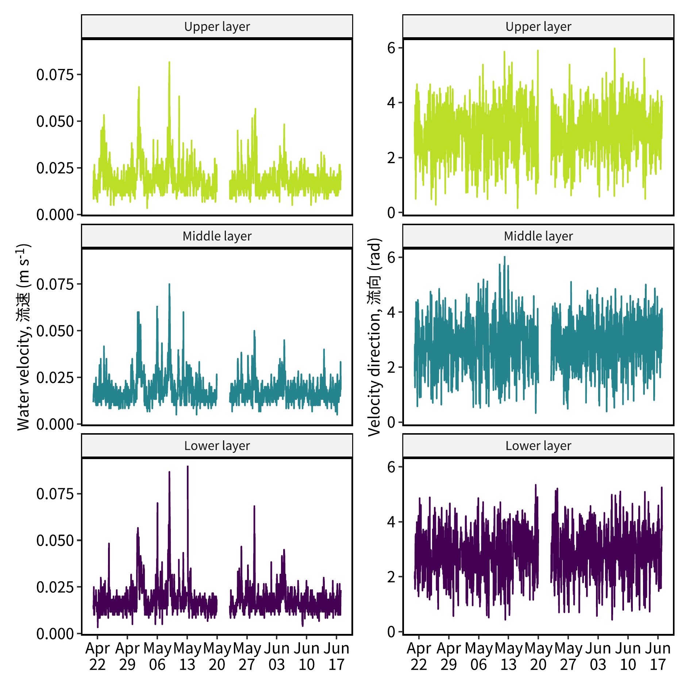
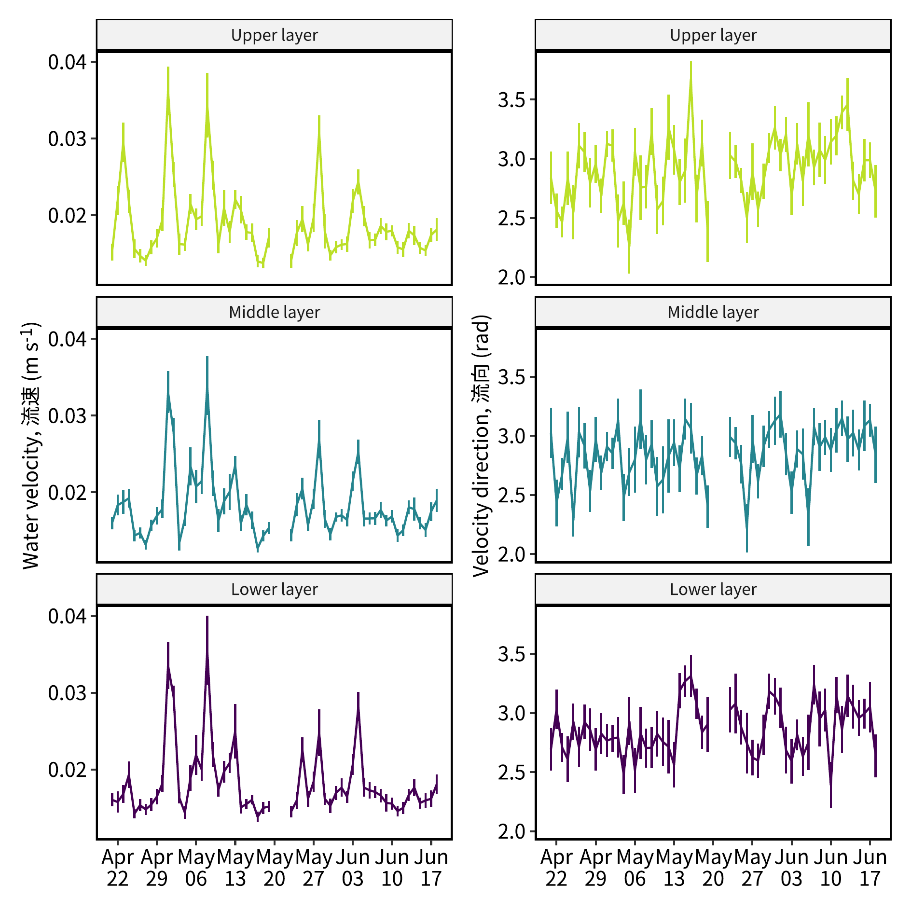
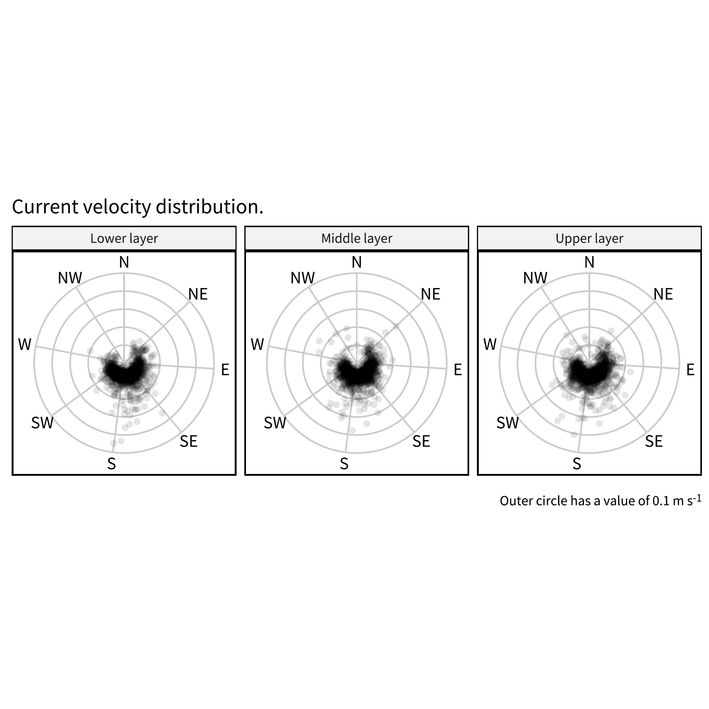
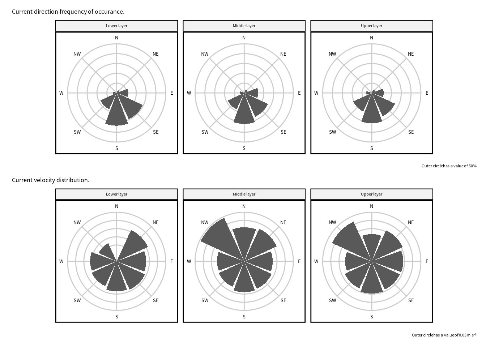
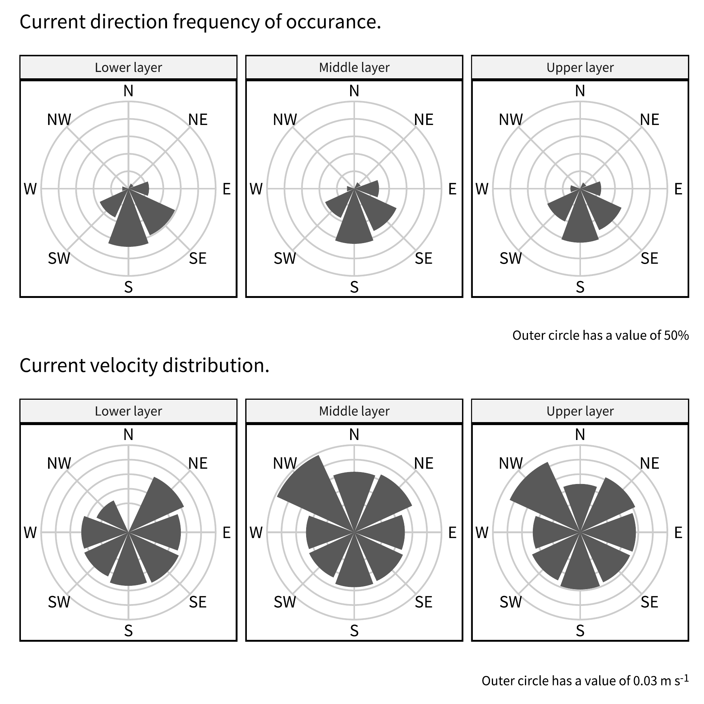

ADCP データの処理
ADCP（Acoustic Doppler Current Profiler，音響ドップラー流速計）は，音響技術を利用して水中の流速を測定する装置です。 その基本原理は以下の通りです。
ドップラー効果
ADCPは，ドップラー効果を利用して水の流速を測定します。 ドップラー効果とは，波源が観測者に対して動いているとき，または観測者が波源に対して動いているときに，波の周波数が変化する現象です。 例えば，静止した状態で聞く電車の笛の音は一定の周波数で聞こえますが，電車が近づいてくると音の周波数が高くなり，遠ざかると低くなります。 この周波数の変化を利用して速度を測定するのがドップラー効果の原理です。
ナローバンドプロファイラー
ナローバンドのADCPは，一定の周波数の音波を水中に発射し，その反射波の周波数の変化を測定します。 発射された音波は水自体から反射されるのではなく，水中に浮遊している微小な粒子（プランクトンや浮遊土粒子，気泡など）から反射されます。 これらの粒子は水と同じ速度で移動していると仮定されるため，粒子の速度を測定することで周囲の水の速度を測定することができます。
測定の仕組み
音波の発射と反射: ADCPは音波を発射し，その反射波を受信します。 反射波の周波数が元の音波の周波数と比べて変化することで，粒子の移動速度が計算されます。
周波数シフト: 反射波の周波数シフト（ドップラーシフト）は，粒子の速度に比例します。 例えば，粒子がADCPに近づいてくる場合，反射波の周波数は高くなり，遠ざかる場合は低くなります。
速度の計算: 測定された周波数シフトを基に，水中の流速が計算されます。 ADCPは複数の深度でこの測定を行い，水柱全体の流速プロファイルを作成します。
パッケージ
library(tidyverse)── Attaching core tidyverse packages ──────────────────────── tidyverse 2.0.0 ──
✔ dplyr 1.1.4 ✔ readr 2.1.5
✔ forcats 1.0.0 ✔ stringr 1.5.1
✔ ggplot2 3.5.1 ✔ tibble 3.2.1
✔ lubridate 1.9.3 ✔ tidyr 1.3.1
✔ purrr 1.0.2
── Conflicts ────────────────────────────────────────── tidyverse_conflicts() ──
✖ dplyr::filter() masks stats::filter()
✖ dplyr::lag() masks stats::lag()
ℹ Use the conflicted package (<http://conflicted.r-lib.org/>) to force all conflicts to become errorslibrary(showtext)Loading required package: sysfonts
Loading required package: showtextdblibrary(ggpubr)
library(lubridate)
library(ggtext)
library(magick)Linking to ImageMagick 6.9.11.60
Enabled features: fontconfig, freetype, fftw, heic, lcms, pango, webp, x11
Disabled features: cairo, ghostscript, raw, rsvg
Using 32 threadslibrary(patchwork)テーマ設定
font_add_google("Noto Sans JP", family = "notosansjp")
theme_pubr(base_size = 10, base_family = "notosansjp") |> theme_set()
theme_update(
legend.title = element_blank(),
axis.line = element_blank(),
axis.title.x = element_markdown(),
axis.title.y = element_markdown(),
panel.background = element_rect(color = "black", linewidth = 1)
)
showtext_auto()関数の定義
read_adcp_attributes = function(filename) {
# Eco357_.*.csv のデータを読み込む
txt0 = read_lines(filename, skip = 10, n_max = 1) |>
str_extract("\\d{4}/\\d{1,2}/\\d{1,2}")
txt = read_lines(filename, skip = 17, n_max = 4)
txt = as.numeric(str_extract(txt, "\\d{1,2}\\.?\\d{0,2}"))
tibble(date = txt0,
device_depth = txt[1],
upper_layer = txt[2],
middle_layer = txt[3],
lower_layer = txt[4])
}
read_adcp = function(filename) {
cnames = c("datetime",
"upper_vel",
"upper_deg",
"middle_vel",
"middle_deg",
"lower_vel",
"lower_deg",
"temperature",
"depth",
"tilt")
read_csv(filename,
skip = 30,
col_types = "cddddddddd",
col_names = cnames) |>
mutate(datetime = ymd_hms(datetime))
}
decompose_velocity = function(vel, rad) {
x = vel * sin(rad) # EW
y = vel * cos(rad) # NS
tibble(x = x, y = y)
}
deg2rad = function(deg) {
deg / 360 * 2 * pi
}
se = function(x, na.rm = F, ...) {
n = sum(is.na(x))
if(na.rm & (n > 0)) {
N = length(x) - n
sd(x, na.rm = T) / sqrt(N - 1)
} else {
sd(x) / sqrt(length(x) - 1)
}
}
save_plot = function(pdfname,
plot = last_plot(),
width = 80, height = 80,
density = 300) {
pngname = str_replace(pdfname, ".pdf", ".png")
ggsave(pdfname, width = width, height = height, units = "mm")
magick::image_read_pdf(pdfname, density = density) |>
magick::image_write(pngname)
}データ読み込み
folder = "~/Lab_Data/takashiman/arikawa_adcp/arikawa_adcp/"
files = dir(folder, pattern ="Eco357_.*csv", full = T)
dset =
tibble(fnames = files) |>
mutate(data = map(fnames, read_adcp)) |>
select(data) |> unnest(data) ADCP の属性を読み込む。
adcp =
tibble(fnames = files) |>
mutate(data = map(fnames, read_adcp_attributes)) |>
select(data) |> unnest(data) データの集計
流向の単位をラジアンに変換する。
- 0: 北から南への流れ
- pi/2: 東から西への流れ
- pi: 南から北への流れ
- 3/2*pi: 西から東への流れ
replace_name = "{str_replace(.col, 'deg', 'rad')}"
dset = dset |>
mutate(across(matches("deg$"),
list(~ deg2rad(.)),
.names = replace_name))１日未満のデータは外す。
N = 24 * 6
dset = dset |>
mutate(date = as_date(datetime)) |>
group_by(date) |>
filter(n() == N)一時間あたりの平均値を求める。
dset_hr =
dset |>
mutate(datetime = floor_date(datetime, "hour")) |>
group_by(date, datetime) |>
summarise(across(matches("vel|rad"), ~mean(., na.rm = T)),
.groups = "drop")
dt_hr =
dset |>
mutate(datetime = floor_date(datetime, "hour")) |>
group_by(date, datetime) |>
summarise(across(matches("temp|dept"), ~mean(., na.rm = T)),
.groups = "drop")一時間あたりのデータから一日あたりの平均値と標準偏差を求める。
dset_day =
dset_hr |>
group_by(date) |>
summarise(across(matches("vel|rad"),
list(m = ~mean(., na.rm = T),
s = ~se(., na.rm = T))))
dt_day =
dt_hr |>
group_by(date) |>
summarise(across(matches("temp|dept"),
list(m = ~mean(., na.rm = T),
s = ~se(., na.rm = T))))dset_hr と dset_day をピボットする
dset_hr =
dset_hr |>
pivot_longer(
matches("vel|rad"),
names_pattern = ("(.*)_(.*)"),
names_to = c("location", "variable"),
) |>
pivot_wider(
names_from = variable,
values_from = value
)
dset_day =
dset_day |>
pivot_longer(
matches("vel|rad"),
names_pattern = ("(.*)_(.*)_(.*)"),
names_to = c("location", "variable", "stat"),
) |>
pivot_wider(
names_from = c(variable, stat),
values_from = value
)NA を追加する。 NA を追加することによって，ggplot で geom_line を使ったときに，NA の部分を繋げないようにする。
dummy = dset_hr |>
expand(datetime = seq(min(datetime), max(datetime), by = "hour"),
location)
dset_hr = full_join(dummy, dset_hr) |>
mutate(date = as_date(datetime))Joining with `by = join_by(datetime, location)`dt_hr = full_join(dummy, dt_hr) |>
mutate(date = as_date(datetime))Joining with `by = join_by(datetime)`dummy = dset_day |>
expand(date = seq(min(date), max(date), by = "day"),
location)
dset_day = full_join(dummy, dset_day)Joining with `by = join_by(date, location)`dt_day = full_join(dummy, dt_day)Joining with `by = join_by(date)`Plots
ylabel1 = "Water temperature, 水温 (°C)"
ylabel2 = "Water depth, 水深 (m)"
datetime_range = dt_hr |> pull(date) |> range() |> as_datetime()
p1 = dt_hr |>
ggplot() +
geom_line(aes(x = datetime, y = temperature)) +
guides(color = "none") +
scale_x_datetime(date_labels = "%b\n%d",
date_breaks = "week",
limits = datetime_range) +
scale_y_continuous(ylabel1) +
scale_color_viridis_d(end = 0.9) +
theme(axis.title.x = element_blank())
p2 = dt_hr |>
ggplot() +
geom_line(aes(x = datetime, y = depth)) +
guides(color = "none") +
scale_x_datetime(date_labels = "%b\n%d",
date_breaks = "week",
limits = datetime_range) +
scale_y_continuous(ylabel2) +
scale_color_viridis_d(end = 0.9) +
theme(axis.title.x = element_blank())
pout = p1 + p2 + plot_layout(ncol = 1)
save_plot("./Images/hourly_avg_temp.pdf",
plot = pout,
width = 160, height = 160)Warning: Removed 69 rows containing missing values or values outside the scale range
(`geom_line()`).
Removed 69 rows containing missing values or values outside the scale range
(`geom_line()`).image_read("./Images//hourly_avg_temp.png")

adcp_tall = adcp |>
select(-device_depth) |>
pivot_longer(matches("layer")) |>
mutate(name = str_replace(name, "_", " ") |> str_to_sentence(),
date = as_date(date))
dbreaks = adcp_tall |> pull(date) |> unique() |> sort()
dbreaks = format(dbreaks, "%b\n%d")
ylabel = "Depth, 深さ (m)"
pout = ggplot(adcp_tall) +
geom_point(aes(x = factor(date), y = value, color = name),
shape = 15, size = 5) +
scale_x_discrete(label = dbreaks) +
scale_y_reverse(ylabel,
limits = c(7, 0),
breaks = c(0, 4:7)) +
scale_color_viridis_d(end = 0.9) +
theme(
axis.title.x = element_blank(),
legend.position = "inside",
legend.position.inside = c(0.5,1),
legend.justification = c(0.5,1),
legend.direction = "horizontal",
legend.background = element_blank()
)
save_plot("./Images/adcp_location.pdf",
plot = pout,
width = 160, height = 160)image_read("./Images/adcp_location.png")

ylabel1 = "Water velocity, 流速 (m s<sup>-1</sup>)"
ylabel2 = "Velocity direction, 流向 (rad)"
label_strip = function(string) {
str_glue("{string} layer") |>
str_to_sentence()
}
datetime_range = dset_hr |> pull(date) |> range() |> as_datetime()
p1 = dset_hr |>
ggplot() +
geom_line(aes(x = datetime, y = vel, color = location)) +
guides(color = "none") +
scale_x_datetime(date_labels = "%b\n%d",
date_breaks = "week",
limits = datetime_range) +
scale_y_continuous(ylabel1) +
scale_color_viridis_d(end = 0.9) +
facet_wrap(vars(location), ncol = 1, as.table = F,
labeller = as_labeller(label_strip)) +
theme(axis.title.x = element_blank())
p2 = dset_hr |>
ggplot() +
geom_line(aes(x = datetime, y = rad, color = location)) +
guides(color = "none") +
scale_x_datetime(date_labels = "%b\n%d",
date_breaks = "week",
limits = datetime_range) +
scale_y_continuous(ylabel2) +
scale_color_viridis_d(end = 0.9) +
facet_wrap(vars(location), ncol = 1, as.table = F,
labeller = as_labeller(label_strip)) +
theme(axis.title.x = element_blank())
pout = p1 + p2
save_plot("./Images/hourly_avg_vel.pdf",
plot = pout,
width = 160, height = 160)Warning: Removed 69 rows containing missing values or values outside the scale range
(`geom_line()`).
Removed 69 rows containing missing values or values outside the scale range
(`geom_line()`).image_read("./Images/hourly_avg_vel.png")

ylabel1 = "Water velocity, 流速 (m s<sup>-1</sup>)"
ylabel2 = "Velocity direction, 流向 (rad)"
label_strip = function(string) {
str_glue("{string} layer") |>
str_to_sentence()
}
date_range = dset_day |> pull(date) |> range()
p1 = dset_day |>
ggplot() +
geom_line(aes(x = date, y = vel_m, color = location)) +
geom_errorbar(aes(x = date,
ymin = vel_m - vel_s,
ymax = vel_m + vel_s,
color = location
), width = 0) +
guides(color = "none") +
scale_x_date(date_labels = "%b\n%d",
date_breaks = "week",
limits = date_range) +
scale_y_continuous(ylabel1) +
scale_color_viridis_d(end = 0.9) +
facet_wrap(vars(location), ncol = 1, as.table = F,
labeller = as_labeller(label_strip)) +
theme(axis.title.x = element_blank())
p2 = dset_day |>
ggplot() +
geom_line(aes(x = date, y = rad_m, color = location)) +
geom_errorbar(aes(x = date,
ymin = rad_m - rad_s,
ymax = rad_m + rad_s,
color = location
), width = 0) +
guides(color = "none") +
guides(color = "none") +
scale_x_date(date_labels = "%b\n%d",
date_breaks = "week",
limits = date_range) +
scale_y_continuous(ylabel2) +
scale_color_viridis_d(end = 0.9) +
facet_wrap(vars(location), ncol = 1, as.table = F,
labeller = as_labeller(label_strip)) +
theme(axis.title.x = element_blank())
pout = p1 + p2
save_plot("./Images/daily_avg_vel.pdf",
plot = pout,
width = 160, height = 160)image_read("./Images/daily_avg_vel.png")

cut_radians = function(x) {
breaks = seq(0, 2*pi, by = pi/4) - pi/8
breaks[breaks<0] = 0
labels = c("N", "NE", "E", "SE", "S", "SW", "W", "NW")
i = which( is.na(x))
j = which(!is.na(x))
y = x + pi/8
z = y[j]
z[z >= (2 * pi)] = z[z >= (2 * pi)] - pi
z[z < (2 * pi)] = z[z < (2 * pi)] - pi/8
x[j] = z
cut(x, breaks = breaks, labels = labels, include.lowest = T)
}
dset_pol = dset_hr |> drop_na() |>
mutate(gr = cut_radians(rad)) |>
group_by(location, gr) |> print() |>
summarise(across(vel,
list(n = ~length(!is.na(.)),
m = ~mean(., na.rm = T))), .groups = "drop") |>
group_by(location) |>
mutate(
vel_sum = sum(vel_n),
vel_n = vel_n / vel_sum) |>
ungroup()# A tibble: 4,011 × 6
# Groups: location, gr [23]
datetime location date vel rad gr
<dttm> <chr> <date> <dbl> <dbl> <fct>
1 2024-04-21 00:00:00 lower 2024-04-21 0.015 1.93 E
2 2024-04-21 00:00:00 middle 2024-04-21 0.0117 1.66 E
3 2024-04-21 00:00:00 upper 2024-04-21 0.015 3.30 S
4 2024-04-21 01:00:00 lower 2024-04-21 0.0133 2.18 SE
5 2024-04-21 01:00:00 middle 2024-04-21 0.015 2.82 S
6 2024-04-21 01:00:00 upper 2024-04-21 0.00833 2.15 SE
7 2024-04-21 02:00:00 lower 2024-04-21 0.0167 1.56 E
8 2024-04-21 02:00:00 middle 2024-04-21 0.0167 1.26 E
9 2024-04-21 02:00:00 upper 2024-04-21 0.0233 2.44 SE
10 2024-04-21 03:00:00 lower 2024-04-21 0.025 1.80 E
# ℹ 4,001 more rowsxbreaks = seq(0, 2*pi, by = pi/4)
xbreaks = xbreaks[-length(xbreaks)]
xlabels = c("N", "NE", "E", "SE", "S", "SW", "W", "NW")
ybreaks = dset_hr |> pull(vel) |> pretty()
ylimits = range(ybreaks)
pout = dset_hr |>
mutate(gr = cut_radians(rad)) |>
ggplot() +
geom_hline(yintercept = ybreaks,
color = "grey80") +
geom_vline(xintercept = xbreaks,
color = "grey80") +
geom_point(aes(x = rad, y = vel), alpha = 0.1,
shape = 20, stroke = 0, size = 3) +
labs(
title = "Current velocity distribution.",
caption = str_c("Outer circle has a value of ",
ylimits[2], " m s<sup>-1</sup>")
) +
scale_x_continuous(breaks = xbreaks,
labels = xlabels) +
scale_y_continuous(limits = ylimits) +
coord_polar() +
facet_wrap(vars(location),
labeller = as_labeller(label_strip)) +
theme(
title = element_markdown(vjust = 0),
axis.text.y = element_blank(),
axis.title.x = element_blank(),
axis.title.y = element_blank(),
axis.ticks.y = element_blank()
)
save_plot("./Images/hourly_vel_distribution.pdf",
plot = pout,
width = 160, height = 160)Warning: Removed 237 rows containing missing values or values outside the scale range
(`geom_point()`).image_read("./Images/hourly_vel_distribution.png")

ylimits = c(0, 0.5)
ylines = seq(0, max(ylimits), by = 0.1)
xlines = seq(0, 7, by = 1)
p1 = dset_pol |>
ggplot() +
geom_hline(yintercept = ylines,
color = "grey80") +
geom_vline(xintercept = xlines,
color = "grey80") +
geom_col(aes(x = gr, y = vel_n)) +
labs(
title = "Current direction frequency of occurance.",
caption = "Outer circle has a value of 50%"
) +
scale_x_discrete(drop = F) +
scale_y_continuous(limits = ylimits) +
coord_polar(start = -pi/8) +
facet_wrap(vars(location),
labeller = as_labeller(label_strip)) +
theme(
title = element_markdown(vjust = 0),
axis.text.y = element_blank(),
axis.title.x = element_blank(),
axis.title.y = element_blank(),
axis.ticks.y = element_blank()
)
ylines = dset_pol |> pull(vel_m) |> pretty()
ylimits = c(0, max(ylines))
p2 = dset_pol |>
ggplot() +
geom_hline(yintercept = ylines,
color = "grey80") +
geom_vline(xintercept = xlines,
color = "grey80") +
geom_col(aes(x = gr, y = vel_m)) +
labs(
title = "Current velocity distribution.",
caption = str_c("Outer circle has a value of ",
ylimits[2], " m s<sup>-1</sup>")
) +
scale_x_discrete(drop = F) +
scale_y_continuous(limits = ylimits) +
coord_polar(start = -pi/8) +
facet_wrap(vars(location),
labeller = as_labeller(label_strip)) +
theme(
title = element_markdown(vjust = 0),
caption = element_markdown(vjust = 1),
axis.text.y = element_blank(),
axis.title.x = element_blank(),
axis.title.y = element_blank(),
axis.ticks.y = element_blank()
)
p1 + p2 + plot_layout(ncol = 1)Warning in plot_theme(plot): The `caption` theme element is not defined in the
element hierarchy.
pout = p1 + p2 + plot_layout(ncol = 1)
save_plot("./Images/monthly_vel_distribution.pdf",
plot = pout,
width = 160, height = 160)Warning in plot_theme(plot): The `caption` theme element is not defined in the element hierarchy.
The `caption` theme element is not defined in the element hierarchy.image_read("./Images/monthly_vel_distribution.png")
